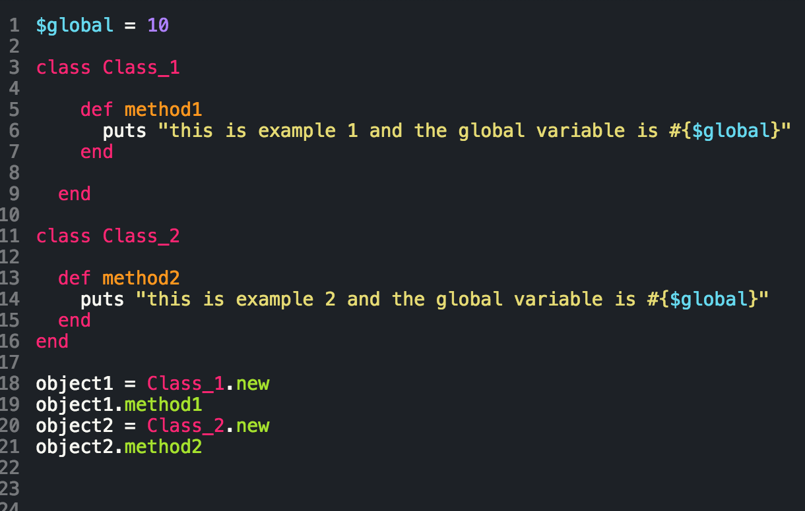
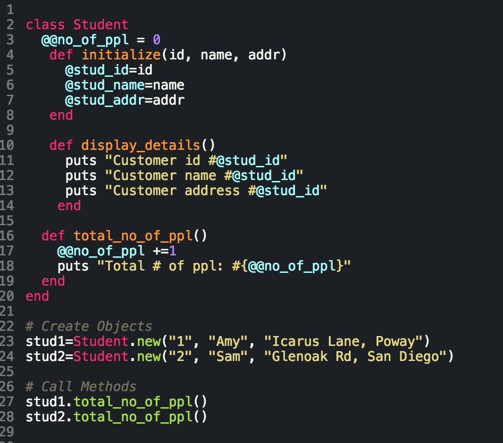
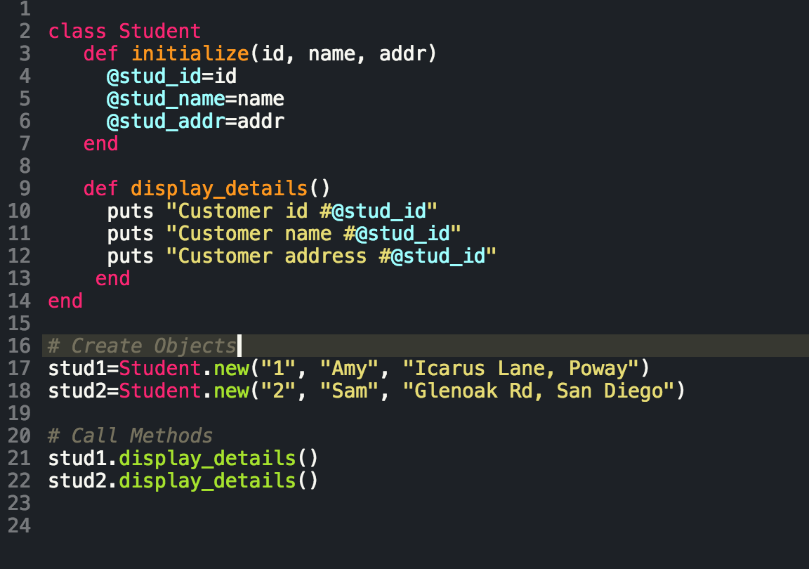
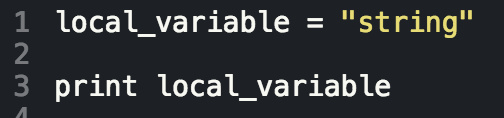
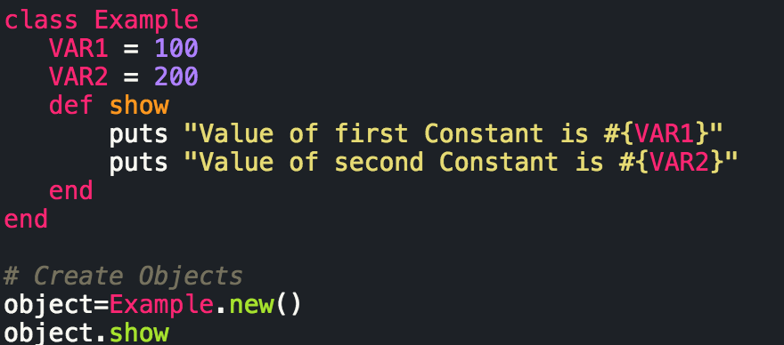
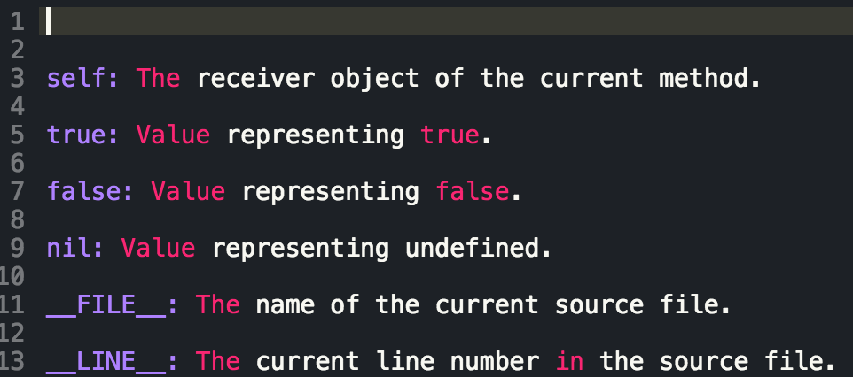
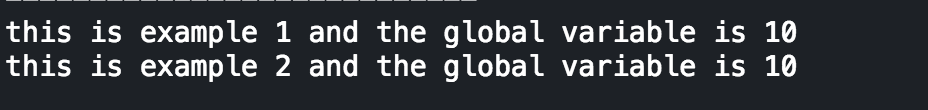
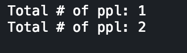
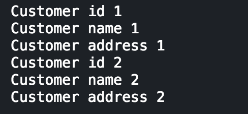
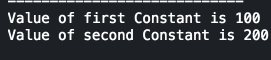

Object Oriented Programming
Variable Scope
July 24, 2015
Developing in the Ruby language means engaging in Object Oriented Programming (OOP). More or less, everything we interact with in Ruby is an object (except for blocs, procs, and lambdas but that's another conversation for another time), and these objects interact with one another via messages. We use variables, which inherit properties from their parent objects (again, another blog for another time), but there are different types of variables that are defined, accessible, and written in their own specific way. The below table is a cheat sheet of the different types of Ruby variables and their scope:
| Ruby Variable Scope Cheat-Sheet | |||||
|---|---|---|---|---|---|
| Global Variables | Class Variables | Instance Variables | Local Variables | Constants | Pseudo-Variables |
|
|
|
|
|
|
|  |  |  |  |  |  |
|  |  |  |  | ||
And that's pretty much the scope of Ruby variables in a nutshell, enjoy!